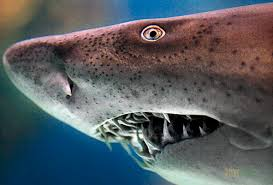
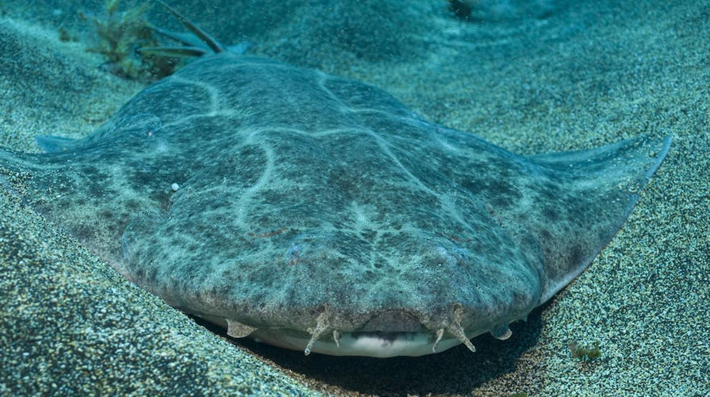

Tiburón toro
La especie conocida como tiburón tigre de arena tiene presencia en todo el mundo, excepto en los polos y el Pacífico Oriental. Sin embargo, está clasificado como en peligro crítico de extinción debido a la alta presión que sufre por la pesca directa para consumo de carne y aletas, aceite de hígado y harina de pescado, así como por la pesca incidental y la captura para parques acuáticos. La Unión Internacional para la Conservación de la Naturaleza (UICN) ha tomado esta medida para proteger la especie.
Tiburón martillo gigante
El tiburón martillo gigante es una especie en peligro crítico de extinción, distribuida en todos los mares con condiciones tropicales y templados cálidos. Su principal amenaza es la pesca directa para la obtención de aletas, que tienen una gran demanda para la elaboración de sopas. También se utilizan otras partes del tiburón, como la carne, el aceite del hígado, la piel, el cartílago y hasta las mandíbulas.

Tiburón ballena
El tiburón ballena es el pez vivo más grande del mundo y se encuentra en todos los mares del mundo, excepto en el Mediterráneo. A pesar de su tamaño, esta especie está en peligro de extinción debido a la pesca directa que ha experimentado para comercializar su carne a altos precios. Aunque en algunas regiones ya no se hace con tanta frecuencia, todavía hay zonas en Asia donde se sigue capturando de manera directa o accidental. Además, los accidentes con grandes embarcaciones y su uso en la industria del turismo también afectan negativamente a las poblaciones de este tiburón.

Tiburón angelote
El tiburón ángel, también conocido como tiburón angelote, solía tener una distribución amplia desde Escandinavia hasta el noreste de África, incluyendo el Mediterráneo, el Mar Negro y las Islas Canarias de España. A pesar de que no ha sido capturado directamente para su comercialización, la pesca accidental y la alteración del ecosistema marino han llevado a esta especie a estar en peligro crítico de extinción. Existen diferentes especies de tiburón ángel, que se describen en un artículo aparte.
